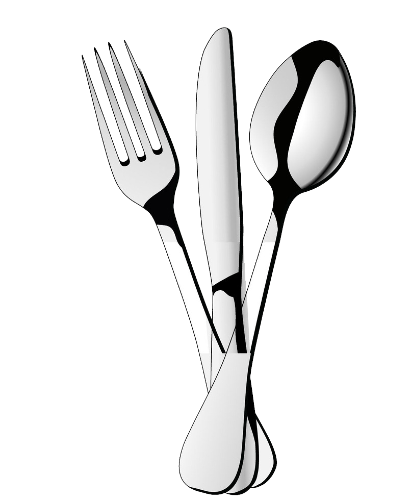

Indulge your senses in an unparalleled culinary experience at Spicesavor Bites, where every dish is a masterpiece crafted with passion and precision. Our chefs, seasoned artisans of flavor, bring together a symphony of tastes, textures, and aromas that transport you to a world of gastronomic delight. At Spicesavor Bites, we pride ourselves on sourcing only the finest, locally-sourced ingredients, ensuring freshness and authenticity in every bite. Each dish is a celebration of culinary innovation, combining traditional recipes with modern techniques to create a menu that reflects our dedication to excellence.From the moment you step into our warm and inviting ambiance, you embark on a journey of taste, guided by a menu that caters to diverse palates. Whether savoring the rich complexities of our signature dishes or exploring the harmonious fusion of international flavors, every dining experience is a symposium of taste and refinement. Our commitment to providing an unforgettable dining experience extends beyond the plate. Impeccable service, a curated wine selection, and an atmosphere of sophistication complement the culinary artistry. At Spicesavor Bites, we invite you to join us in a culinary adventure, where each visit is not just a meal but a sensory exploration, leaving an indelible mark on your palate and memories.Elevating the dining experience at Spicesavor Bites, our commitment to excellence extends to every detail. Immerse yourself in an atmosphere where attentive staff anticipates your every need, creating an ambiance that exudes warmth and hospitality. Our carefully curated wine selection, spanning regions and varietals, complements the diverse flavors on your plate, enhancing the overall indulgence. As you revel in the artistry of our culinary creations, Come join us, and let your senses embark on a journey where passion meets perfection in every exquisite dish.
 Indulge in a symphony of flavors beyond the culinary realm with our exceptional array of beverages at [Restaurant Name]. Our hot drinks, crafted with precision and expertise, warm your soul with every sip. From the comforting embrace of artisanal coffees to the delicate dance of herbal infusions, each cup is a sensory journey. For those seeking refreshment, our cold drinks offer a cool respite. Savor the crispness of handcrafted iced teas, fruit-infused coolers, and signature mocktails, meticulously blended to tantalize your taste buds. At [Restaurant Name], our commitment to excellence extends to every element, ensuring that every beverage complements your dining experience with unparalleled satisfaction.Quench your thirst with our thoughtfully curated selection of hot and cold beverages that cater to a spectrum of preferences. Our baristas take pride in transforming every cup of coffee into an artful expression of flavor, capturing the essence of premium beans. Indulge in the robust notes of our espresso creations or relish the velvety smoothness of a perfectly brewed latte. As the day unfolds, transition to our invigorating cold drinks, where vibrant blends of fresh fruits and herbs create a symphony of taste. From zesty lemonades to innovative mocktails, each chilled creation is a testament to our commitment to providing a diverse and delightful beverage experience. Unwind, sip, and savor the harmonious balance that our hot and cold drink offerings bring to your journey at [Restaurant Name].As you explore our hot and cold beverage repertoire, discover a harmonious marriage of tradition and innovation. The comforting warmth of our hot drinks welcomes you to a world of rich aromas, while the invigorating coolness of our cold concoctions provides a refreshing escape.
Indulge in a symphony of flavors beyond the culinary realm with our exceptional array of beverages at [Restaurant Name]. Our hot drinks, crafted with precision and expertise, warm your soul with every sip. From the comforting embrace of artisanal coffees to the delicate dance of herbal infusions, each cup is a sensory journey. For those seeking refreshment, our cold drinks offer a cool respite. Savor the crispness of handcrafted iced teas, fruit-infused coolers, and signature mocktails, meticulously blended to tantalize your taste buds. At [Restaurant Name], our commitment to excellence extends to every element, ensuring that every beverage complements your dining experience with unparalleled satisfaction.Quench your thirst with our thoughtfully curated selection of hot and cold beverages that cater to a spectrum of preferences. Our baristas take pride in transforming every cup of coffee into an artful expression of flavor, capturing the essence of premium beans. Indulge in the robust notes of our espresso creations or relish the velvety smoothness of a perfectly brewed latte. As the day unfolds, transition to our invigorating cold drinks, where vibrant blends of fresh fruits and herbs create a symphony of taste. From zesty lemonades to innovative mocktails, each chilled creation is a testament to our commitment to providing a diverse and delightful beverage experience. Unwind, sip, and savor the harmonious balance that our hot and cold drink offerings bring to your journey at [Restaurant Name].As you explore our hot and cold beverage repertoire, discover a harmonious marriage of tradition and innovation. The comforting warmth of our hot drinks welcomes you to a world of rich aromas, while the invigorating coolness of our cold concoctions provides a refreshing escape.
At [Restaurant Name], our culinary excellence is orchestrated by a team of visionary chefs who transform dining into an art form. Each member of our culinary brigade is a maestro, crafting a symphony of flavors that resonates with passion and precision. Our head chef, a culinary virtuoso with a wealth of experience, leads the charge in curating a menu that reflects innovation and dedication to the craft. Their discerning palate and creative flair inspire our kitchen team to push boundaries, resulting in dishes that transcend the ordinary. Our chefs, meticulously selected for their expertise and creativity, hail from diverse culinary backgrounds, bringing a fusion of ideas to our kitchen. Their commitment to sourcing the finest, locally-sourced ingredients ensures that every dish tells a story of authenticity and freshness. Behind the scenes, our culinary artisans work in unison, seamlessly blending tradition with contemporary techniques to create a gastronomic journey that captivates the senses. What sets our chefs apart is not just their technical prowess but their unwavering passion for the culinary arts. Their dedication is evident in the meticulous preparation, from the careful knife work to the artful presentation. Their creativity knows no bounds, as they continuously experiment with flavors, textures, and innovative cooking methods. This direct interaction creates a unique dining experience, where guests not only savor exceptional dishes but also gain a deeper appreciation for the culinary craftsmanship behind each creation.